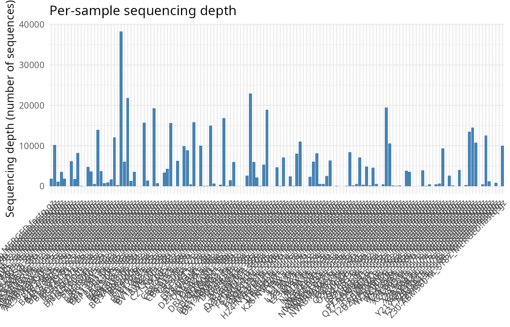
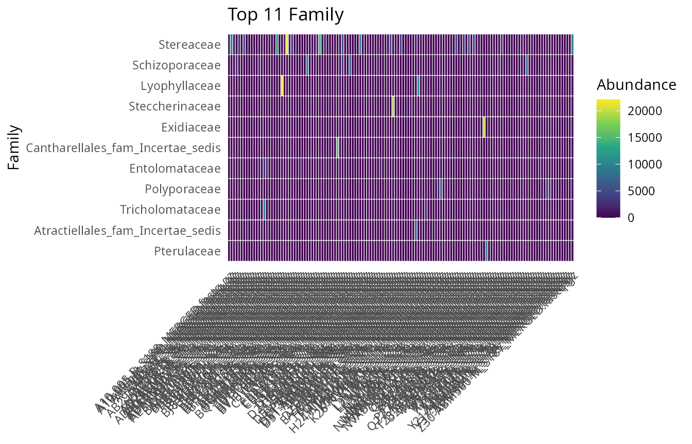
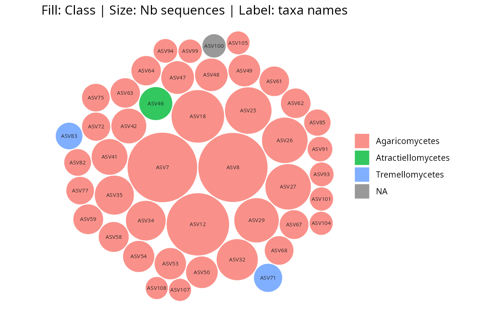
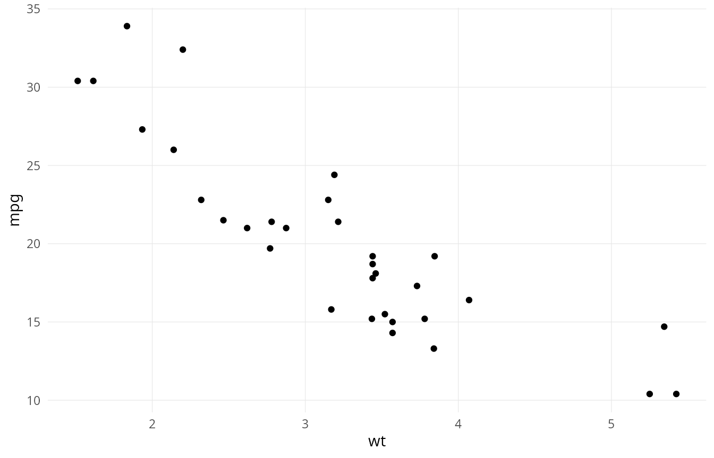
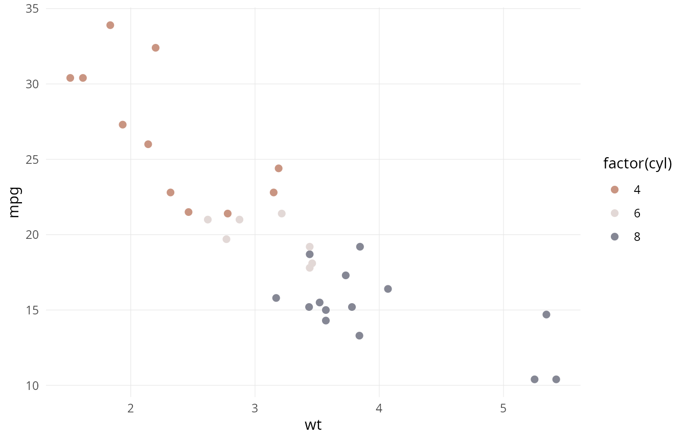

What ggplotpq is for
ggplotpq is the ggplot2
visualisation layer of the pqverse. It owns pure
ggplot2 helpers (geoms, themes, scales, colour/palette
management) and single-phyloseq ggplot
wrappers that previously lived in MiscMetabar
or comparpq.
It is deliberately not for cross-package
multi-phyloseq comparators (those stay in
comparpq), nor for machine-learning / networks (those stay
in netaipq). Genuinely new analysis methods belong in
netaipq; ggplotpq may render their plots, but
does not host the analysis.
Installation
# install.packages("remotes")
remotes::install_github("adrientaudiere/ggplotpq")Plotting helpers for phyloseq objects
plot_sample_depth_pq() summarises sequencing depth
across samples — a quick first diagnostic before any rarefaction or
normalisation.
plot_sample_depth_pq(data_fungi_mini)
plot_taxa_heatmap_pq() shows the most abundant taxa
across samples, at the taxonomic rank of your choice.
plot_taxa_heatmap_pq(data_fungi_mini, n_top = 15, taxa_rank = "Family")
gg_bubbles_pq() lays out taxa as bubbles sized by
abundance and coloured by a taxonomic rank.
gg_bubbles_pq(physeq = data_fungi_mini, rank_color = "Class")
Themes, palettes, and scales
ggplotpq ships reusable ggplot2 building
blocks that work on any plot, not only phyloseq ones.
theme_pq_minimal() is a clean, publication-oriented
theme:
ggplot(mtcars, aes(wt, mpg)) +
geom_point() +
theme_pq_minimal()
The scale_*_pq_discrete() family gives curated discrete
palettes:
ggplot(mtcars, aes(wt, mpg, color = factor(cyl))) +
geom_point(size = 2) +
scale_color_pq_discrete("Picabia") +
theme_pq_minimal()
The idest family (theme_idest(),
idest_pal(), scale_color_idest_*(),
scale_fill_idest_*()) provides a coordinated branded look;
see the function reference for the
full set.
Where to go next
- The function reference is
organised by origin (migrated from
MiscMetabar, fromcomparpq, fromtaxinfo) and by new visualisation helpers. - Because every function returns a standard
ggplotobject, you can freely combineggplotpqhelpers with each other and with the widerggplot2ecosystem (patchwork, custom scales, and so on).